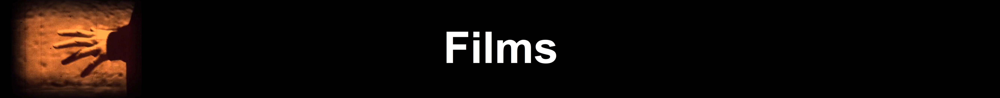

■ Chercheurs d'avenir - une émission radio
où j'interviens, 2016.
■ Cold flows in the
MareNostrum simulation, 2008.
M1 internship report under the supervision of Avishai Dekel at the Racah
Institute of Physics, Hebrew University of Jerusalem, Israel.
■ La mesure de la
température : Des premiers thermoscopes à l'échelle de température absolue, 2007.
L'histoire du concept de température et de sa mesure, un
travail s'appuyant sur l'ouvrage d'Hasog Chang Inventing
Temperature : Measurement and Scientific Progress (Oxford Studies
in Philosophy of Science, 2004).
■ Sur l'espace-temps et
la causalité en relativité restreinte, 2007.
Comment un petit nombre de postulats sur la nature de l'espace temps
permettent de définir le cadre conceptuel de la
relativité restreinte et de retrouver la notion intuitive de
causalité.
■ La formation des galaxies, 2007.
Projet bibliographique effectué sous la direction de Gary
Mamon (Institut d'Astrophysique de Paris).
■ Participation à
la préparation de la mission Darwin, 2007.
Stage effectué à l'Institut d'Astrophysique Spatiale
(CNRS, Université Paris-Sud 11) sous la direction de Bruno
Chazelas : interférométrie en frange noire pour
l'observation directe d'exoplanètes.
■ TIPE : L'influence de
l'étude de la lumière dans la mise en place par la
théorie de la relativité restreinte d'une nouvelle
conception de l'espace et du temps, 2006.
■ TPE : Les trous
noirs, 2003.
■ L'apparition de
mouvements de caméra psychologiques chez
F. W. Murnau
Ou comment F. W. Murnau introduit des
mouvements de caméra pour exprimer la subjectivité des
personnages de ses films au lieu de faire appel à la
stylisation des décors, des accessoires et du jeu des acteurs
propres à l'expressionnisme.
■ Emergence et
déclin du Production Code
La censure dans le cinéma américain, des origines
à nos jours.
■ Le controle de la
production cinématographique: David Selznick & Alfred Hitchcock
Un exemple de mécanisme de controle de la production
hollywoodienne, tiré de
Hitchcock et Selznick - La riche et étrange collaboration
entre Alfred Hitchcock et David O. Selznick à Hollywood,
de L. J. Leff (Ramsay, Paris, 1990).
■ À propos de
Shirin d'Abbas Kiarostami
L'abstraction au service de l'universalité.
■ La constitution du hors-champ
d'après Nana ou les deux espaces de Noël Burch
■ Analyse de
séquence : scène où Tristana se dénude
devant Saturno, Tristana, Luis Bunuel.
■ Analyse de
séquence : scène du cinématographe, Les
carabiniers, Jean-Luc Godard.
